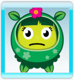

Lukt het maar niet om op een bepaald niveau de laatste ster binnen te halen? Kun je er maar niet achter komen hoe je een niveau kunt voltooien?
Hier zijn een paar handigheidjes om je op gang te helpen:
- Als je moeite hebt met de basisbeginselen, zorg dan dat je de handleiding helemaal doorneemt.
- Lees alle borden en tips die je onderweg tegenkomt, want deze bevatten waardevolle informatie!
- Probeer de bloemen allemaal even goed te verzorgen. Als je je aandacht te lang op een enkele bloem richt, kun je tijd tekort komen.
- Zorg ervoor dat je de juiste bloem met de juiste kleur verzorgt. Let op wat elke bloem zegt.
- Leer de regels voor het mengen van kleuren. Wist je dat je kleuren kunt mengen in de lucht?
- Ben je de weg kwijt? Kun je een bepaald niveau of de juiste zaadjes niet vinden? Neem de tijd om op ontdekking te gaan. Probeer de paden eens te volgen.
- Leer hoe je de kaart gebruikt. Je kunt niet alleen naar eerder gespeelde niveaus schakelen, de kaart geeft ook tuinkabouters en niveau aan die nog niet overwonnen zijn.
- Lukt het maar niet om op een bepaald niveau 5 sterren binnen te halen? Maak je niet druk - bewaar dat voor later. Als je er meer talenten bij krijgt, kun je vorige niveaus opnieuw spelen. Je zult versteld staan van het resultaat!
- Experts kunnen zich helemaal op het vuurwerk richten - als je voldoende vuurwerk kunt afsteken hoef je je nooit meer druk te maken over het verzorgen van bloemen.
- Probeer het stuifmeel zover mogelijk van de bloem los te laten. Hoe groter de afstand, hoe groter de kans op vuurwerk.
- Je krijgt vrijwel overal punten voor, maar vuurwerkcombinaties leveren enorm veel bonuspunten op. Met grote combinaties kun je maar liefst 500.000 punten verdienen!